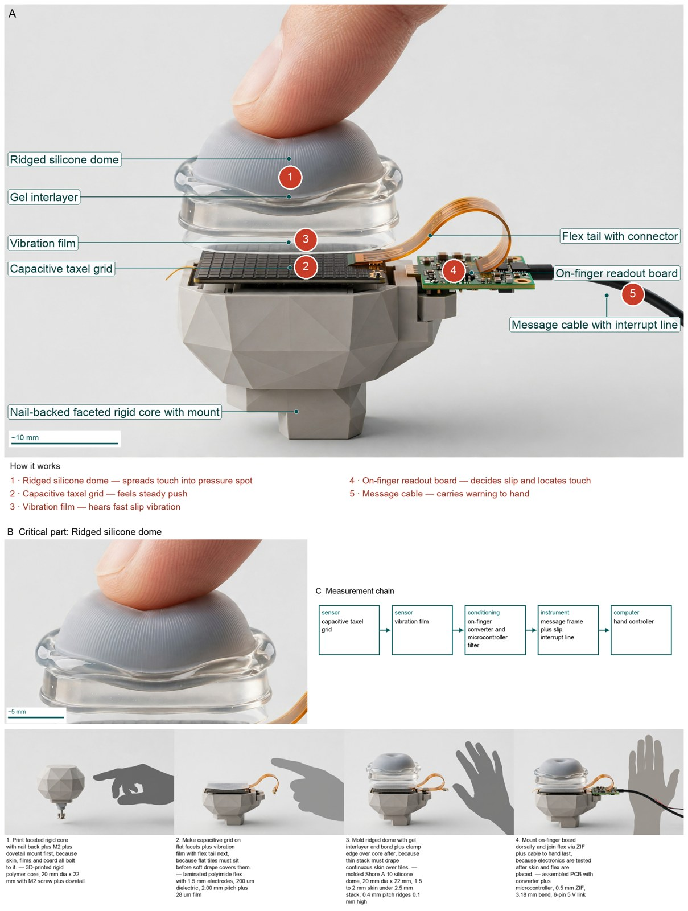
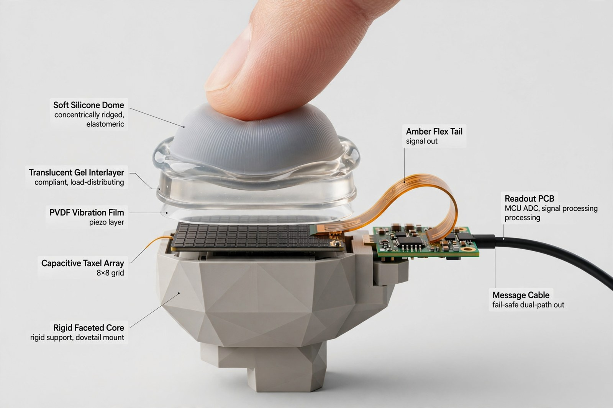
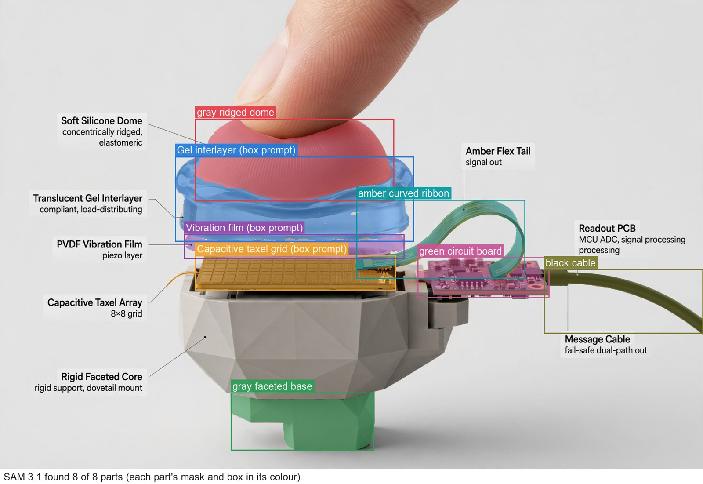

Hardware Engineer — concept report
Tactile fingertip sensor for robot hands
Robot hands drop and crush objects because they cannot feel what they hold. Design a fingertip for a robot hand that feels touch the way a human fingertip does: where it is touched, how hard, and when an object starts to slip.
- Shaped and sized like a human fingertip, mountable on a robot finger
- Detects contact forces as small as about 1 mN
The concept

A soft ridged dome about 20 mm wide spreads even a 1 mN touch onto squeeze sensors for steady push and a vibration film for slip, and a tiny finger computer sends position, force and a fast slip warning to the hand.
Pressure: ridged silicone dome -> gel interlayer -> capacitive taxel grid | Measured: on-finger converter and microcontroller filter -> hand controller
Three decisive design choices
- F1 molded Shore A 10 dome with ridges plus sipes (C3) because only it quantifies 1 mN to 0.470 mm spot at 5.78 kPa under 2.5 mm stack, beating clear pad needing optics and fluid skin that leaks.
- F3 capacitive taxels plus vibration film (C18) because capacitive alone cannot carry 100 to 500 Hz vibration through 9.00 ms converter update, while split path keeps 0.269 pF base with 3.57 fF change plus volt-level slip signals.
- F6 fail-safe heartbeat plus interrupt plus frame (C29) because frame alone at 51.2 kbit per s cannot meet 30.0 ms latency, while normally-held line drops to danger on wire break per track-circuit analogy.
Does the 30 ms slip warning loop close on built hardware under shake and grip load?
What happened
How the picture was made


What the critic flagged:
- callout: Callout reads 'Capacitive Taxel Array 8x8 grid' containing numbers 8x8
What the segmenter saw (SAM 3.1)
Code asked SAM for each part by a plain phrase and measured the boxes against what the design expects; the critic received the differences as evidence.

How the council changed
The council's instructions were not rewritten in this run.
References
89 sources found by the council's searches and the prior-art check (click to open)
- sushengpolymer.com — v961x8 Ecoflex Supersoft 00 30.pdf https://sushengpolymer.com/media/pdf/v961x8_Ecoflex-Supersoft-00-30.pdf
- smooth-on.com — Dragon Skin™ 30 vs. Ecoflex™ 5 https://www.smooth-on.com/compare/5111/4796/a/
- jiannnh.github.io — VecTile: A Low-Cost Flexible Tactile Array for 3-DoF Force Sensing https://jiannnh.github.io/VecTile/
- robotiq.com — Physical AI | Robotiq https://robotiq.com/physical-ai
- ieeexplore.ieee.org — Robo Psychophysics: https://ieeexplore.ieee.org/ielaam/4543165/7782799/7542177-aam.pdf
- pmc.ncbi.nlm.nih.gov — Use of tactile feedback to control exploratory movements to characterize object compliance https://pmc.ncbi.nlm.nih.gov:443/articles/PMC3405524/
- mdpi.com — GelSight: High-Resolution Robot Tactile Sensors for Estimating Geometry and Force https://www.mdpi.com/1424-8220/17/12/2762/
- eetimes.com — CDC enables touch-control sensitivity in portable electronic devices https://www.eetimes.com/cdc-enables-touch-control-sensitivity-in-portable-electronic-devices/
- fierceelectronics.com — Capacitance Sensing in Human Body Contact Applications https://www.fierceelectronics.com/embedded/capacitance-sensing-human-body-contact-applications
- github.com — | 440 Part IV / Perception | | https://github.com/liuao08/neuro/raw/9e9ef5eedd9d29d2cdf89e450465c60766b1d3fa/chap19/fig_19_3.pdf
- library.fiveable.me — Tactile acuity - Perception Study Guide 2024 | Fiveable (2024) https://library.fiveable.me:443/perception/unit-4/tactile-acuity/study-guide/xA7CC8U81kt1gmEu
- rnd.iitb.ac.in — Single-Step Fabrication of Porous Elastomer for High Sensitivity Pressure Sensor | IITBombay https://rnd.iitb.ac.in/node/2597
- people.eecs.berkeley.edu — paper.dvi https://people.eecs.berkeley.edu/~ronf/PAPERS/grayb.pdf
- syntouchllc.com — SynTouch - BioTac https://www.syntouchllc.com/Products/BioTac/
- azosensors.com — Revolutionizing Robot Touch with Advanced Tactile Sensors https://www.azosensors.com/article.aspx?ArticleID=3368
- syntouchllc.com — 2014 Wettels Chapter.pdf (2014) https://www.syntouchllc.com/Media/Publications/_publications/2014_Wettels_Chapter.pdf
- robotsusa.com — OmniHand 2025 Tactile Robot Hand: Specs & Uses | RobotsUSA (2025) https://www.robotsusa.com/AgiBot-OmniHand-2025-with-Tactile-Sensors.htm
- researchgate.net — Multimodal Tactile Sensor https://www.researchgate.net/profile/Gerald-Loeb/publication/271827182_Multimodal_Tactile_Sensor/links/56630bf608ae4931cd5ed86f/Multimodal-Tactile-Sensor.pdf
- overfitted.cloud — Contact Status Recognition and Slip Detection with a Bio-inspired Tactile Hand https://overfitted.cloud/pdf/2603.18370v1
- kaken.nii.ac.jp — 116504182000kenkyu seika hokoku gaiyo https://kaken.nii.ac.jp/en/report/KAKENHI-PROJECT-11650418/116504182000kenkyu_seika_hokoku_gaiyo/
- 5dok.org — Tactile Sensory Control of Dexterous Manipulation in Humans https://5dok.org/document/qvl8n6x1-tactile-sensory-control-of-dexterous-manipulation-in-humans.html
- quizgecko.com — NEUR3101 Motor Control Lecture 12: Dexterous Manipulation PDF https://quizgecko.com/upload/l12-neur3101-dexterous-manipulation-1-slide-per-pagepdf-RaCYQL
- cati.com — Convert Durometer to Young's Modulus https://www.cati.com/blog/convert-durometer/
- analog.com — AD7147A (Rev. B) https://www.analog.com/media/en/technical-documentation/data-sheets/ad7147a.pdf
- jlcpcb.com — FPC Connector Guide : Types and Reliability Considerations https://jlcpcb.com/blog/fpc-connector-guide
- syntouchllc.com — Microsoft Word - BioTac Product Manual.docx https://www.syntouchllc.com/Products/BioTac/_media/BioTac_Product_Manual.pdf
- datasheet.octopart.com — AD7147 (Rev. E) https://datasheet.octopart.com/AD7147PACPZ-RL-Analog-Devices-datasheet-101563057.pdf
- assets.robotiq.com — Installation https://assets.robotiq.com/website-assets/support_documents/document/online/Hand-E_Instruction_Manual_e-Series_Web_20190329.zip/Hand-E_Instruction_Manual_e-Series_Web/Content/3.%20Installation.htm
- researchgate.net — The soft gripper grasping objects of various shapes, sizes and... | Download Scientific Diagram https://www.researchgate.net/figure/The-soft-gripper-grasping-objects-of-various-shapes-sizes-and-materials-using-power-and_fig5_325644880
- pcbboardassembly.com — History of Flexible Printed Circuit (FPC) – pcbboardassembly https://pcbboardassembly.com/history-of-flexible-printed-circuit-fpc/
- copyprogramming.com — STM32F103 I2C Light Sensor Integration: Complete 2026 Guide - Light sensor integration complete (2026) https://copyprogramming.com/howto/stm32f103-reading-value-from-lightsensor-by-i2c
- st.com — STM32L1x current consumption measurement and touch sensing demonstration firmware https://www.st.com/resource/en/application_note/an3413-stm32l1x-current-consumption-measurement-and-touch-sensing-demonstration-firmware-stmicroelectronics.pdf
- pubmed.ncbi.nlm.nih.gov — The role of fingerprints in the coding of tactile information probed with a biomimetic sensor https://pubmed.ncbi.nlm.nih.gov/19179493/
- ar5iv.labs.arxiv.org — Exploiting High Quality Tactile Sensors for Simplified Grasping https://ar5iv.labs.arxiv.org/html/2207.12360
- mjt.me.uk — How cheap digital verniers work https://www.mjt.me.uk/posts/digital-vernier-teardown
- ez.analog.com — How to adjust the sensitivity and calculate capacitance for AD7147 https://ez.analog.com/other-products/w/documents/34180/how-to-adjust-the-sensitivity-and-calculate-capacitance-for-ad7147
- visualize.jove.com — A flexible capacitive pressure sensor with a hybrid porous PDMS/SA hydrogel structure for touch/pain detection https://visualize.jove.com/39239676-a-flexible-capacitive-pressure-sensor-with-a-hybrid-porous-pdmssa-hydrogel-structure-for-touchpain-detection
- english.semi.cas.cn — High-Sensitive Wearable Capacitive Pressure Sensor with Hemispherical Porous Electrode--Institute of Semiconductors http://english.semi.cas.cn/ps/202409/t20240920_690028.html
- dspace.mit.edu — GelSight: High-Resolution Robot Tactile Sensors for Estimating Geometry and Force https://dspace.mit.edu/bitstream/handle/1721.1/114627/sensors-17-02762.pdf;jsessionid=719B80403710C8420B6D730B779B01F3?sequence=1
- mdpi.com — Free and Forced Vibration Modes of the Human Fingertip https://www.mdpi.com/2076-3417/11/12/5709/xml
- mdpi-res.com — Free and Forced Vibration Modes of the Human Fingertip https://mdpi-res.com/d_attachment/applsci/applsci-11-05709/article_deploy/applsci-11-05709-v3.pdf?version=1624348917
- usgs.gov — The Blind Zone of Earthquake Early Warning https://www.usgs.gov/programs/earthquake-hazards/science/blind-zone-earthquake-early-warning
- pmc.ncbi.nlm.nih.gov — Dynamics of fingertip contact during the onset of tangential slip http://pmc.ncbi.nlm.nih.gov/articles/PMC4191101/
- dercuano.github.io — Notes on the STM32 microcontroller family https://dercuano.github.io/notes/stm32.html
- qorvalyn.com — Earthquake Early Warning Systems: How Alerts Protect Lives https://qorvalyn.com/2958/earthquake-early-warning-systems-how-alerts-protect-lives/
- mirror.umd.edu — BioTac https://mirror.umd.edu/roswiki/BioTac.html
- nature.com — Efficient tactile encoding of object slippage | Scientific Reports https://www.nature.com/articles/s41598-022-16938-1?error=cookies_not_supported&code=80e5cb56-9675-4f83-af58-65e860526540
- github.com — README.md https://github.com/galv0331/smart-sensor-node-for-machine-health/blob/HEAD/firmware/stm32/README.md
- zbook.org — STM32G4 Mainstream Series Mixed Signals MCU https://zbook.org/read/a08_stm32g4-mainstream-series-mixed-signals-mcu.html
- canada.newark.com — How to use ADC Oversampling techniques to improve signal-to-noise ratio on STM32 MCUs - Application note https://canada.newark.com/site/binaries/content/assets/common/product-family-documents/stm-stm32l552e-ev/stm-stm32l552e-ev-an3.pdf?ICID=I-FP-EMB-DKHQ-STM-STM32L552E-EV-TR
- railwaynews.net — What is a Track Circuit? https://railwaynews.net/wiki/what-is-a-track-circuit
- patents.google.com — US1059828A - System for vehicle control.
- - Google Patents https://patents.google.com/patent/US1059828A/en
- schlegel.biz — How to wire an emergency-stop to a safety relay? | Schlegel https://www.schlegel.biz/en/blog/how-is-an-emergency-stop-switch-wired-to-a-safety-relay
- forumautomation.com — Why Emergency Stop push button use two Normally Closed (NC) contacts in a safety relay circuit? https://forumautomation.com/t/why-emergency-stop-push-button-use-two-normally-closed-nc-contacts-in-a-safety-relay-circuit/13483
- sciencedirect.com — An experimental and theoretical study of the effect of sample thickness on the Shore hardness of elastomers https://www.sciencedirect.com/science/article/pii/S0109564110000369
- simpletire.com — What Are Tire Sipes? Benefits & Types Explained for Better Traction | SimpleTire https://simpletire.com/learn/tire-maintenance-safety/tire-sipe
- engineerfix.com — What Is Siping Tires and How Does It Work? https://engineerfix.com/what-is-siping-tires-and-how-does-it-work/
- patents.glgoo.top — US5897517A - Fabric reinforced elastomer materials
- - Google Patents https://patents.glgoo.top/patent/US5897517A/en
- alibaba.com — How To Choose The Best Silicone Hands For Realistic Testing & Training https://www.alibaba.com/product-insights/how-to-choose-the-best-silicone-hands-for-realistic-testing-training.html
- smooth-on.com — Dragon Skin™ 10 MEDIUM Technical Specifications https://www.smooth-on.com/compare/4607/r/
- formx.biz — Dragon Skin™ 10 SLOW https://www.formx.biz/p/product/dragon-skin-10-slow/SkinSlowxx
- alibaba.com — Bar Mat Vs Silicone Grip Liner—does Textured Rubber Actually Prevent Spills Or Just Collect Sticky Residue https://www.alibaba.com/product-insights/bar-mat-vs-silicone-grip-liner-does-textured-rubber-actually-prevent-spills-or-just-collect-sticky-residue.html
- doaj.org — Preparation and friction properties of silicone rubber composites – DOAJ https://doaj.org/article/015ed1b1671648a6bf3953e67e468870
- syntouchllc.com — Microsoft Word - FingerprintsDoD.doc (2009) https://www.syntouchllc.com/Technology/_publications/2009_Fishel_FingerprintsDOD.pdf
- academia.edu — Evaluation of bonding efficiency between facial silicone and acrylic resin using different bonding agents and surface alterations https://www.academia.edu/74798714/Evaluation_of_bonding_efficiency_between_facial_silicone_and_acrylic_resin_using_different_bonding_agents_and_surface_alterations
- koreascience.kr — JAKO201227140592878.pdf http://www.koreascience.kr/article/JAKO201227140592878.pdf
- arxiv.org — SpikeATac: A Multimodal Tactile Finger withTaxelized Dynamic Sensing for Dexterous Manipulation https://arxiv.org/html/2510.27048
- designnews.com — Video: Robots Develop Sense of Touch https://www.designnews.com/motion-control/video-robots-develop-sense-of-touch
- pmc.ncbi.nlm.nih.gov — Slip Detection and Grip Adjustment Using Optical Tracking in Prosthetic Hands https://pmc.ncbi.nlm.nih.gov/articles/PMC10947720/
- researchgate.net — | (A) Schematic diagram of the BioTac biomimetic tactile sensor.... | Download Scientific Diagram https://www.researchgate.net/figure/A-Schematic-diagram-of-the-BioTac-biomimetic-tactile-sensor-Sensing-modalities_fig12_230599922
- sirslab.dii.unisi.it — A Datadriven Approach to Remote Tactile Interaction: From a BioTac Sensor to Any Fingertip Cutaneous Device https://sirslab.dii.unisi.it/papers/2014/Pacchierotti.EH.2014.Haptics.Fin.pdf
- catalyzex.com — Peter Ballentine https://www.catalyzex.com/author/Peter%20Ballentine
- arxiv.org — SpikeATac: A Multimodal Tactile Finger with Taxelized Dynamic Sensing for Dexterous Manipulation https://arxiv.org/html/2510.27048v1
- arxiv.org — SpikeATac: A Multimodal Tactile Finger with Taxelized Dynamic Sensing for Dexterous Manipulation https://arxiv.org/pdf/2510.27048
- round-lake.dustinice.workers.dev:443 — SpikeATac: A Multimodal Tactile Finger with Taxelized Dynamic Sensing for Dexterous Manipulation https://round-lake.dustinice.workers.dev:443/https/arxiv.org/pdf/2510.27048
- arxiv.org — SpikeATac: A Multimodal Tactile Finger with Taxelized Dynamic Sensing for Dexterous Manipulation https://arxiv.org/html/2510.27048v2
- git.whohe.eu.org — SpikeATac: A Multimodal Tactile Finger with Taxelized Dynamic Sensing for Dexterous Manipulation https://git.whohe.eu.org/arxiv.org/pdf/2510.27048
- researchgate.net — Development of Anthropomorphic Robot Hand with Tactile Sensor : SKKU Hand II https://www.researchgate.net/publication/224685364_Development_of_Anthropomorphic_Robot_Hand_with_Tactile_Sensor_SKKU_Hand_II
- roamlab.github.io — SpikeATac https://roamlab.github.io/spikeatac/
- ira.lib.polyu.edu.hk — This is the Pre-Published Version. The following publication C. Y. Leong, J. Cui, X. Cheng, L. Htein and H. -Y. Tam, "Tactile-Sensitive Artificial Skin for Multiaxial Force Detection and Texture Recognition," http://ira.lib.polyu.edu.hk/bitstream/10397/117148/1/Leong_Tactile-sensitive_Artificial_Skin.pdf
- dokumen.tips — (PDF) Multimodal Tactile Sensor - SynTouch Inc. · Tactile sensing in robotic end-effectors must meet two types of haptic requirements: those geared toward object identification and characterization - DOKUMEN.TIPS https://dokumen.tips/documents/multimodal-tactile-sensor-syntouch-inc-tactile-sensing-in-robotic-end-effectors.html
- mdpi-res.com — Artificial Skin Ridges Enhance Local Tactile Shape Discrimination https://mdpi-res.com/d_attachment/sensors/sensors-11-08626/article_deploy/sensors-11-08626-v3.pdf?version=1403316092
- static1.squarespace.com — Role of fingerprint-inspired relief structures in elastomeric slabs for detecting frictional differences arising from surface monolayers https://static1.squarespace.com/static/59b8113fa8b2b0ac8308da3b/t/60e7acd38ad60325f0c3c321/1625795799350/79+-+2018+-+Dhong+-+Soft+Matter+-+Fingerprints.pdf
- mdpi.com — Artificial Skin Ridges Enhance Local Tactile Shape Discrimination https://www.mdpi.com/1424-8220/11/9/8626/pdf
- mdpi.com — Artificial Skin Ridges Enhance Local Tactile Shape Discrimination https://www.mdpi.com/1424-8220/11/9/8626
- allaboutcircuits.com — Can This Skin Sensor Give Robotics and Prosthetics a Delicate Touch? https://www.allaboutcircuits.com/news/can-this-skin-sensor-give-robotics-and-prosthetics-a-delicate-touch/
- newscientist.com — Bionic hands get the sensitive touch https://www.newscientist.com/article/1897299-bionic-hands-get-the-sensitive-touch/
Files
Run 20261104-121011_tactile-fingertip-sensor-for-robot-hands · total cost $3.03 · conceptual illustration — physical performance not established.